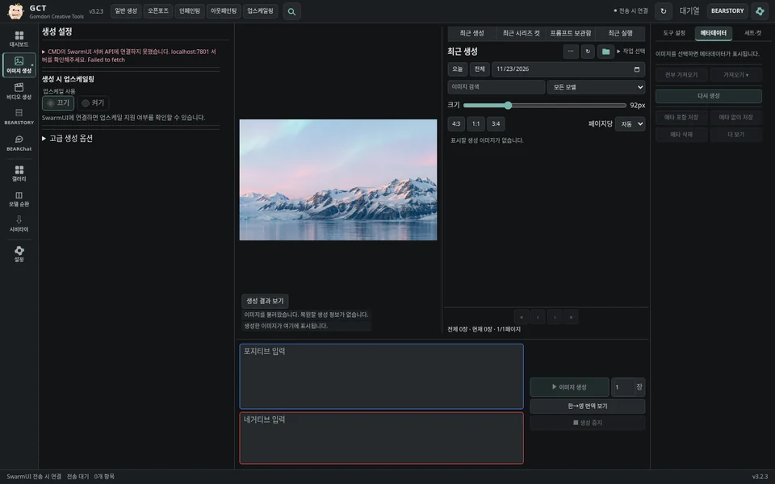

Design case study
ANIMA
Bridge
이미지 생성 전후로 흩어진 작업을 하나의 흐름으로 묶은 브라우저 확장 프로젝트입니다. 현재 작업실은 Gomdori Creative Tools 이름으로 이어지고 있습니다.
- 제품
- Chrome · Edge 확장 프로그램
- 역할
- 작업 흐름 · 정보 구조 · UI 설계 및 구현
- 연동
- 로컬 SwarmUI

Context
화면을 옮겨도
작업의 맥락은 이어지게.
기존 작업의 문제
프롬프트를 작성한 곳과 모델을 바꾸는 곳, 완성 이미지를 다시 찾는 곳이 다르면 작업마다 설정과 결과의 맥락을 다시 확인해야 합니다.
정보 구조와 설계 방향
탐색과 생성 설정은 왼쪽, 입력과 결과 확인은 가운데, 메타데이터와 세트·컷 도구는 오른쪽에 배치했습니다. 갤러리와 대기열은 작업실의 주요 이동 경로로 두었습니다.
Workflow
작업 흐름 둘러보기
설계 설명용 인터랙티브 목업
프롬프트와 모델 설정을 한 화면에
입력과 설정은 같은 작업 공간에 남겨두고 중앙에서 결과를 확인합니다.
- 프롬프트생성할 장면을 작성합니다.
- 모델·샘플러필요한 생성 설정을 모아봅니다.
- 생성 요청대기열에서 요청을 추적합니다.
결과를 찾고 다음 작업으로
이전 결과를 다시 살펴보고, 생성 정보와 함께 탐색합니다.

- 결과 탐색생성 이미지 모아보기
- 이미지 상세프롬프트와 생성 정보 확인
- 보관함다시 사용할 결과 정리
요청이 어느 단계인지 확인
현재 진행 상황과 결과를 구분해 표시합니다.
- 대기처리를 기다리는 요청
- 생성 중현재 실행 중인 작업
- 완료다시 열 수 있는 생성 결과
Iteration
반복 사용에서
다듬은 부분
- 탐색
- 작업실·갤러리·영상 도구의 이름과 활성 메뉴 표현을 통일했습니다.
- 구분
- 얇은 패널 경계로 입력과 설정을 구분하고 화면을 사용하는 동안 기존 테마와 레이아웃을 유지하도록 구성했습니다.
- 결과 관리
- 저장한 결과를 갤러리에서 다시 탐색하고 상세 정보로 이어갈 수 있게 했습니다.
Artwork
생성 결과 전시
공개 갤러리에서 ANIMA 작품과 생성 정보를 둘러볼 수 있습니다.